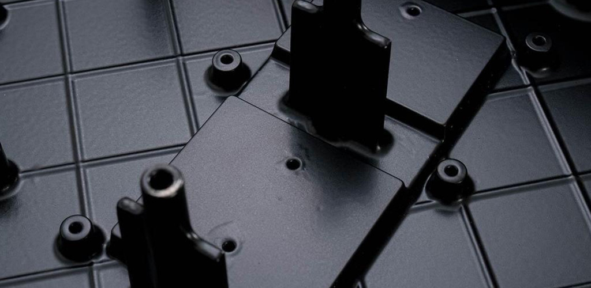

Otomotiv Döküm Endüstrisi
Otomotiv Casting, otomotiv parçaları üretiminde alüminyum malzemelerin kullanımı ile gerçekleştirilen döküm tekniğini ifade eder. Kalkancı garantisi ile sunulan Otomotiv Casting, korozyona karşı direnç göstermesi ve yüksek ölçüde dayanıklılığa sahip olması nedeniyle alüminyum tekniği ile üretilir. Teknik uygulanırken en dayanıklı sonucu almak için eritilmiş alüminyumun, basınç verilerek kalıplara dökülmesi sağlanır. Otomotiv Casting Tekniği, sıcak ya da soğuk odalı pres döküm olarak iki şekilde uygulanabilir.
Alüminyumun Otomotiv Endüstrisinde Uygulanması
Otomotiv endüstrisinde çevrenin, petrol edinimlerinin ve birçok farklı faktörün bir araya gelmesi ile birlikte alüminyum kullanımına yönelim başlamıştır. Döküm ve ekstrüzyon metotları ile üretilebilen alüminyum parçalar, alternatiflerine göre daha düşük maliyetli olduğu için otomotiv endüstrisinde de yerini bulmuştur. Dünya genelinde yürütülen AR-GE çalışmaları ile otomotiv sektöründeki alaşımların üretimi günümüzde çoğunlukla alüminyum ile birlikte kullanılan döküm tekniklerinden sağlanır.
Otomotiv Endüstrisinde Alüminyum Döküm Uygulaması
Pres döküm uygulamalarında kullanımı yaygın olan alüminyum, dökümü zorlayıcı bir elementtir. Ancak buna rağmen dayanıklılığı yüksek hafifliği ideal oranlarda olur. Otomotiv endüstrisinde alüminyum döküm uygulaması; kolay şekil verilmesi, yüksek iletkenlik gücü ve geri dönüştürme özelliği ile tercih edilir. Otomotiv endüstrisinin yedek parçaları genellikle çok küçük yapılıdır ve bu nedenle döküm işlemlerine tabi tutulan alüminyumlar, girift yapılı minimal parçaların dökümünde uygun rol alır.
Otomotiv Endüstrisinde Alüminyum Alaşımlı Parçalar
Endüstrinin her geçen gün artan rekabet ortamı ve çevrenin korunması konusundaki duyarlılıklar, otomobiller için parçaların üretiminde çelik ve demir elementlerine alternatif arayışını gündeme getirir. Sektör içerisinde bu malzemelere alternatif olarak sunulan alüminyum alaşımlı parçalar, otomotivlerde yakıt tüketimini minimum seviyeye çekerken, sürüş güvenliğini artırmaktadır. Otomotiv endüstrisinin vazgeçilmez alaşımlı parçaları ise şöyledir:
- Alüminyum silikon alaşımları,
- Alüminyum manganez alaşımları,
- Alüminyum bakır alaşımları,
- Alüminyum çinko magnezyum alaşımları.
Neden Otomotiv Endüstrisi İçin Alüminyum Pres Döküm?
Döküm işlemleri, eriyen malzemelerin farklı kalıplar içerisinde dökülmesi yöntemi ile şekillendirilmesi ile gerçekleşir. Döküm işlemlerinin temel amacı maddelerin eritilerek, yararlı ürünlere dönüştürülmesidir. Kullanılan alüminyum pres döküm işlemleri, en küçük parçaların bile en ideal şekilde ortaya çıkarılmasını sağlar. Basınçlı döküm sistemleri, eritilen metallerin yüksek basınçlar altında kalıp boşluklarına preslenmeleri ile şekillenir. Otomotiv parçalarının geri dönüştürülebilir olması, yüksek performans sağlaması ve maliyetlerinin uygun seviyelerde oluşması için endüstride bu teknikler kullanılır.Endüstriyel verimliliğin en üst seviyede olmasını sağlayan ürünleri kısa sürede üretebilmesini sağlar.
Alüminyumdan Yapılan Otomotiv Dökümlerinin Avantajı Nedir?
Otomotiv Casting teknikleri konusunda çözüm sunan markamız, otomotiv parçaları için maliyet / fayda analizlerinde sektöre birçok avantaj sunar. Alüminyum kullanımının, sahip olduğu yoğunluk ve dayanıklılık oranlarında çelik malzemelerle mukayese edildiğinde daha avantajlı olduğu görülür. Ayrıca Otomotiv Casting üretimlerinde; araçların aks vibrasyonları, darbelere ve seslere karşı absorbsiyon özellikleri geliştirilir. Çelikten üretilen malzemelere göre çok daha güçlü ve uyumlu parçalar üretmek Otomotiv Casting ile mümkündür.Araçların fren aksamları, vites kutuları, sanayi robotları gibi güce ve dikkate dayalı uygulamalarında üst düzey hizmet kalitesi sunan firmamız, yüksek basınç özellikli alüminyum döküm ihtiyacına net çözümler bulmaktadır
Otomotiv Bileşenleri için Kalkancı Alüminyum Döküm Şirketi
Otomotiv casting tekniği için ürettiğimiz döküm bileşenler aşağıdaki şekilde sıralanır:
- EN AC 46000,
- EN AC 46100,
- EN AC 46100,
- EN AC 47100,
- EN AC 43400,
- A380 & A383,
- Özel / EN AC 43500 & EN AC 51500,
- RHEINFELDEN Bileşenleri,
- Magsimal,
- Silafont
Döküm Montaj Valf Gövdeleri Kalkancı Otomotiv Alüminyum Döküm İmalat Yeteneği
İşletmemizde tüm döküm işlemleri özel dökümhanelerde gerçekleşmektedir. Günümüzde en çok tercih edilen yöntemlerden biri olan yüksek basınçlı döküm tekniği, dökümhanelerimiz içerisinde seri üretim şeklinde yapılır. Bu yöntem, Otomotiv Casting için hem fiyat avantajı hem de yüksek kalite performansı sunar. Otomotiv alüminyum döküm imalat yeteneğimiz içerisinde yararlandığımız ekipmanlar ise şöyledir:
- Tüm tezgahlarda aktif olarak işlem gören kalıpların yağlanmasında kullanılan robotlar.
- Tezgahlarda potalama sistemlerinden ham madde elde edilmesi.
- Dozajlama fırınları.
- Hücre sistemlerine uygun olarak işleyen 6 eksen ile çalışan döküm robotları.
İmalat yeteneğimizi güçlendiren diğer ekipmanlar arasında alüminyum soğuk oda döküm tezgahları da bulunur. Yüksek hacimli işleme gücüne sahip tezgahlar, yüksek kalitede üretim için endüstriyel robotlarla birlikte çalışır. Otomotiv Casting üretim ve yönetim sistemlerimiz online olarak yürütülürken, izlemelerin ve planlamaların gerçekleştirilmesi için veri toplama otomasyonlarından yararlanılır.
Otomotiv Parçaları Konusunda Proje Deneyimleri
Kalkancı tasarım merkezi, aşağıdaki konularda profesyonel çözüm sunan hizmetler verir.
- Magmasoft Simülasyon,
- Projelendirmeler,
- Endüstriyel araştırmalar,
- Laboratuvar çalışmaları.
Otomobiller için yedek parça üretimleri konusundaki proje deneyimleri, güncel teknolojik araçların kullanımı ile sürekli olarak geliştirilir. Geliştirme süreci, üretim parametrelerini de doğru şekilde değiştirir. ARGE çalışmaları ile desteklenen proje deneyimleri, tasarım ve simülasyon aşamalarını tamamlayan ürünlerin üretim aşamalarından önce projelendirilmesi ve planlanmasını içerir. Buradaki amaç, üretime alınacak olan parçaların ham madde temini, üretim ve satış hedef performansı süreçlerinin hesaplanmasını mümkün kılar. Projelendirme ve planlama çalışmalarında finansal gider birimleri, maliyet ve fayda oranları ve risklerin planlanması gibi ince hesaplamalar yapılır. Projelendirme süreci işletmeler için kontrol edilmesi mümkün bir üretim akışı sağlar.
Otomotiv Döküm Firması Kalkancı
Kalkancı olarak yoğun bir hizmet verdiğimiz Otomotiv Döküm Endüstrisi konusunda bizimle çalışmak ve Kalkancı’nın profesyonel hizmetlerinden faydalanmak isterseniz iletişim linki üzerinden bize ulaşabilirsiniz.
Alüminyum Döküm Endüstrisi
Yüksek dayanımı, kolay şekillendirilebilmesi ve hafifliği ile günümüzde pek çok sektörde tercih edilen Alüminyum Döküm Endüstrisi, katma değeri yüksek üretim alanlarından biridir. Alüminyumun iyi bir alaşım olmasının da etkisiyle elde edilebilen ürünlerin çeşitliliği birçok sanayi üretimi için tercih sebebi olmaktadır.
Genel olarak üretim sanayisi ve sektöründe yer alan firmalar Alüminyum Döküm Endüstrisinin temel müşteri kitlesini oluşturur. Yani sanayisi ve üretim kapasitesi yüksek olan ülkeler Alüminyum Döküm Endüstrisi pazarının çoğunluğunu oluşturmaktadır. Öyle ki sanayi ürünlerinin tamamına yakınında en az 1 tane de olsa döküm ürüne ihtiyaç duyulmaktadır.
Tüm bu sektörlerde ve üretimde Alüminyumun bu denli tercih edilmesinin ana nedeni, korozyona karşı dirençliliği ve elektrik iletkenliği bazında dayanıklı yapısıdır. Üretim aşamasında yüksek basınç sistemli erimiş metallerin belirli bir kalıbı zorlamasıyla elde edilen Alüminyum Dökümler, uygun maliyeti ve yüksek boyut stabilize olmasıyla da dikkat çeker. Alüminyum Döküm Endüstrisinde sıklıkla tercih edilen dökme alüminyumların parça üretiminde kullanılması sırasında Kum Döküm, Metal Enjeksiyon Döküm, Alçak Basınçlı Döküm gibi pek çok teknikten faydalanılır. Üretilecek ürünün miktarına, şekline, fiziksel özelliklerine göre değişen bu durum, alüminyum parça üretimi alanında ihtiyaçların rahatlıkla karşılanmasını sağlar. Bu denli artıları olan, ihtiyaca yönelik modifiye edilebilen Alüminyum bu sebeple birçok sektörde tercih edilmektedir.
Neden Alüminyum Döküm?
- Alüminyum Döküm ile elde edilen ürünler genellikte hafiftir ve pratik bir kullanıma sahiptir.
- Üretim verimlilikleri fazla, enerji maliyetleri ve karbon emilimleri düşüktür.
- Elektrik, elektronik, telekomünikasyon, hırdavat, endüstri, otomotiv, nalburiye, aydınlatma, perakende gibi pek çok sektörde alüminyum dökümle üretilen malzemeler kullanılır.
- İletkenlik özellikleri yüksektir.
- Alüminyum döküm üretimi aşamasında kolay şekillenebilmesi ile hızlı üretime olanak sağlar.
- Toksik bir alaşım değildir.
- Geri dönüştürülebilir ve dayanıklı bir yapıya sahiptir.
- Alüminyum dökümler iyi bir yansıtıcı işlevi görür.
Alüminyum Döküm Şirketleri
Alüminyum Döküm Şirketlerinin, Alüminyum Döküm Üretiminde kullandığı üç temel teknik bulunur. Basınçlı Döküm, Kalıcı Kalıp ve Kum Döküm olarak adlandırılan bu teknikler içerisinde günümüzde en çok basınçlı Döküm Tercih edilir. Eriyen alüminyumun basınç etkisiyle bir çelik kalıbı zorlaması tekniği olarak da tanımlanabilen bu teknik, hassas ürünlerin imal edilmesi sürecinde etkili olmaktadır. Özellikle Alüminyum Döküm Şirketleri tarafından titizlikle uygulanması gereken süreçte yüksek hacimli üretim söz konusudur.
Alüminyum Dökümde gerek ilgili çalışanların döküm yeteneği ve teknik tecrübesi, gerekse kalıphane üniteleri ve proses boyunca işlemlerin tamamlanmasındaki titizlik, üretilen ürünün kalitesini arttıran kriterlerin başında yer alır. Bu nedenle döküm yapan firmalar arasında müşteri kitlesine her alanda hizmet verebilecek yeterliliğe sahip olmak gerekir. Otomotiv, Aydınlatma, Savunma, Ulaşım, Medikal, Enerji gibi pek çok sektörde kalifiye personellerle Alüminyum Döküm Hizmeti almak uzun ömürlü ve dayanıklı malzemelerle faaliyet sahalarını genişletmenin öncelikli koşuludur.
Bu geniş kapsamlı hizmet alanında yer alan KALKANCI, Alüminyum Döküm konusunda dünya çapında hizmet sunabilen bir firma olarak öne çıkmaktadır. KALKANCI yüksek teknolojiyle donatılmış ekipmanları ve alanında uzman deneyimli ekipleriyle hem Türkiye’ye hem de dünyanın birçok ülkesine profesyonel hizmet vermektedir.
Alüminyum Döküm Üreticisi KALKANCI
Alüminyum Döküm Üreticisi KALKANCI olarak, Enerji, Aydınlatma ve Otomotiv sektörlerinde faaliyetlerimizi profesyonel olarak sürdürmekteyiz. Döküm Üreticisi Firma olarak sektörün en önemli beklentilerinden biri olan “pazar taleplerini karşılama” konusunda eksiksiz hizmet verebilmekteyiz. Yüksek miktarlarda siparişleri, hizmet ve ürün kalitemizi bozmadan üretebilen KALKANCI olarak, hem Türkiye’de hem de dünyada sektörün temel üreticilerinden biri konumunda bulunmaktayız.
3 ana sektörde hizmet veren KALKANCI, Alüminyum Döküm pazar dağılımının en yoğun olduğu Otomotiv, Enerji ve Aydınlatma sektörlerinde Alüminyum Döküm Üretimi sağlamaktadır. Üretilecek ürünün miktarına, şekline, fiziksel özelliklerine göre minimum sürede maksimum verim elde etmeyi amaçlayan KALKANCI, alüminyum parça üretimi alanında ihtiyaçların karşılanmasını olanaklı hale getirmektedir.
KALKANCI Döküm Fabrikası
Firmaların sektörel bazlı ihtiyaçlarına yanıt verebilme adına maksimum verimlilik ilkesiyle hizmet veren Kalkancı, hem zamandan ve maliyetten tasarruf etmeyi hem de döküm endüstrisine yönelik ürünlerin ilgili adreslere kısa sürede ulaştırılmasını mümkün kılar. Uygun maliyet olanaklarıyla yüksek basınçlı alüminyum döküm üreticisi olarak hizmet veren firmamız, hassas çalışma prensibi gereği hatasız üretimi bir amaç kabul eder.
Sanayi kollarının rutin işleyişlerini hızlandırma alanındaki tecrübesi, otomatik kalıp yağlama robotu teknolojisi, otomatik kepçe sistemi gibi kapsamlı ekipmanlara sahip olan firmamız, 6 eksenli 8 farklı döküm robotuyla üretime hız kazandırmaktadır.
Döküm Endüstrisinde Öncelik: Maksimum Verimlilik
Üretim tezgahlarında hücre sistemlerine göre hazırlanan ürünler ve uygun fiyatlarıyla döküm endüstrisi için farklı çözümler sunan Kalkancı, çevrim içi yönetim sistemleriyle verilerin otomatik olarak toplanmasını mümkün kılar. Alüminyum Soğuk Kamaralı Döküm Tezgahlarında yüksek hacimli endüstriyel robotlar aracılığıyla yapılan üretimlerde hedef; Otomotiv, Elektrik ve Enerji alanlarında hizmet veren tüm firmalara güvenilir ve kaliteli hizmet sunabilmektedir. Yüksek adetli üretim ve sektördeki ihtiyaçların kısa vadede çözümlenebilmesi anlayışıyla projelere değer katan Kalkancı, döküm sonrası süreçte de ürünlerden elde edilen numuneleri toplayarak kontrol işlemlerini gerçekleştirmektedir.
Tüm döküm üretim alanlarında güçlü iş birlikleriyle yol alan firmamız, endüstriyel ihtiyaçların eksiksiz olarak karşılanabilmesi adına CNC İşleme merkezlerinde 7 gün 24 saat verilerin çevrim içi olarak tutulabileceği otomasyon sistemlerine sahiptir. Üretim sürecinde karşılaşılabilecek sorunları en az seviyeye indirebilmek adına gerekli analiz işlemlerini eksiksiz olarak tamamlayan KALKANCI, geniş kapsamlı çalışma alanlarıyla Türkiye’nin lider alüminyum döküm şirketlerinden biridir.
İstanbul Alüminyum Döküm Üreticisi Kalkancı
Eğer sizler de firmanız için Alüminyum Döküm konusunda KALKANCI’dan hizmet almak ve ihtiyaçlarınızı karşılamak isterseniz bizimle iletişime geçebilirsiniz.